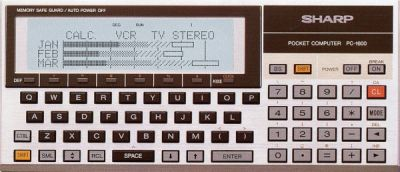

A weblog focused on interesting circuits, ideas, schematics and other information about microelectronics and microcontrollers.
E-books
Disclaimer
Because I have not tested all electronic circuits mentioned on this pages, I cannot attest to their accuracy; therefore, I do not provide a warranty of any kind and cannot be held responsible in any manner.
vintage
Pocket PC challenge
25. December 2009 - 19:42 — adminDo you remember the old pocket PCs like the SHARP PC-1500, PC-1600 etc.? A small plastic brick with an ASCII keyboard and simple LCD.

Twitter client for Commodore C64/128
16. June 2009 - 15:28 — adminBREADBOX64 is a twitter client for the C64/128. It uses Contiki and the MMC Replay cartridge with the RR-Net add on for the physical connection to the net.

m64
7. June 2009 - 11:20 — adminA small computer, based on ATMega162, built by C64 lover Andre Klonz.

Build your own Z80 computer
6. May 2009 - 21:49 — adminA legendary book by Steve Ciarcia available online!
External 128-512 kB RAM for ZX Spectrum
19. March 2009 - 19:30 — adminZX Spectrum is still alive - at least in the Czech Republic. :) Here is a Velesoft's (nearly) unobtrusive solution for ZXS memory enhancing (in English, don't worry).

Introduction to 6502
19. February 2009 - 19:47 — admin6502 information is not as nostalgic as it seems to be...
Z80 code bits from MICROCode
11. December 2008 - 23:32 — adminSome old software from MICROCode for your CP/M computers
A Z80 nostalgia - computers by Retroleum
23. November 2008 - 17:41 — adminIf you're interesting in the old computers, you haven't miss this page with interesting constructions and informations.
Old good times
29. October 2008 - 17:42 — adminRemember the old good times with all these amazing computers like ZXS, C64, BBC etc.? Get 8-bit nostalgia now!